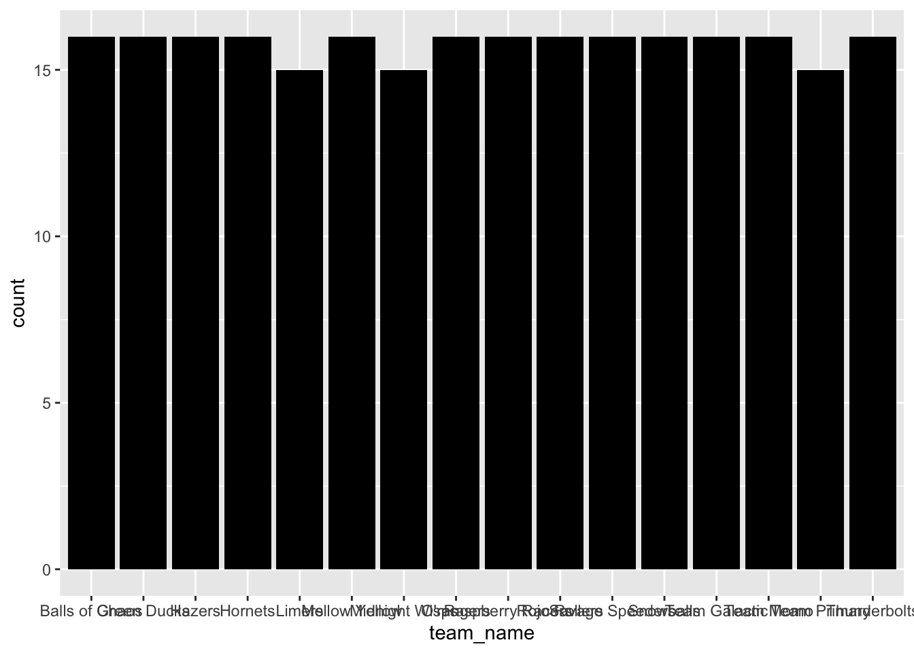
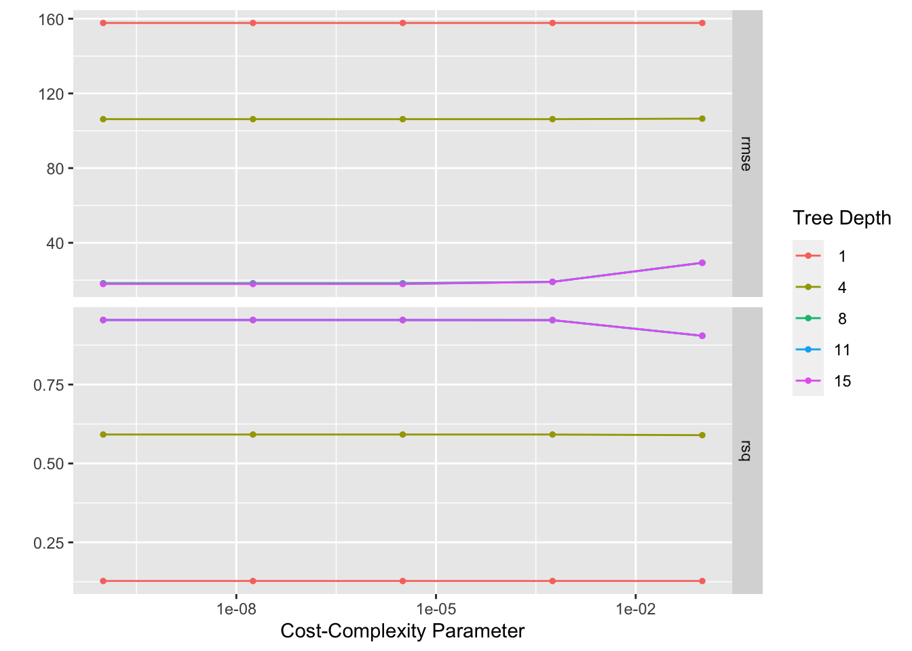

library(tidytuesdayR)
library(ggplot2) #for plotting
library(broom) #for cleaning up output from lm()
library(here) #for data loading/saving
library(tidymodels) # for modeling
library(tidyverse)
library(ggplot2)
library(rpart.plot)
library(rpart)
library(vip)
library(glmnet)
library(ranger)
library(mlbench)
library(kernlab)##
## Attaching package: 'kernlab'## The following object is masked from 'package:scales':
##
## alpha## The following object is masked from 'package:purrr':
##
## cross## The following object is masked from 'package:ggplot2':
##
## alphalibrary(kknn)
marbles <- readr::read_csv('https://raw.githubusercontent.com/rfordatascience/tidytuesday/master/data/2020/2020-06-02/marbles.csv')## Rows: 256 Columns: 14## ── Column specification ────────────────────────────────────────────────────────
## Delimiter: ","
## chr (9): date, race, site, source, marble_name, team_name, pole, host, notes
## dbl (5): time_s, points, track_length_m, number_laps, avg_time_lap##
## ℹ Use `spec()` to retrieve the full column specification for this data.
## ℹ Specify the column types or set `show_col_types = FALSE` to quiet this message.select_data = marbles %>% select(c(site,marble_name,team_name,time_s,track_length_m,number_laps))
final_data = select_data %>% drop_na()
final_data$track_length_m = as.factor(final_data$track_length_m)
final_data$number_laps = as.factor(final_data$number_laps)
ggplot(final_data, aes(x=marble_name)) + geom_bar(fill = "black")
#ggplot(final_data, aes(x=race)) + geom_bar(fill = "black")
ggplot(final_data, aes(x=number_laps)) + geom_bar(fill = "black")set.seed(111)
# Put 3/4 of the data into the training set
data_split <- initial_split(final_data, prop = 3/4)
# Create data frames for the two sets:
train_data <- training(data_split)
test_data <- testing(data_split)
set.seed(111)
folds <- vfold_cv(train_data, v = 5, repeats = 5, strata = site)
data_rec <- recipe(time_s ~ ., data = train_data) %>% step_dummy(all_nominal())
################## decision tree model #################
tune_spec <-
decision_tree(
cost_complexity = tune(),
tree_depth = tune()
) %>%
set_engine("rpart") %>%
set_mode("regression")
tune_spec## Decision Tree Model Specification (regression)
##
## Main Arguments:
## cost_complexity = tune()
## tree_depth = tune()
##
## Computational engine: rpart## # A tibble: 25 × 2
## cost_complexity tree_depth
## <dbl> <int>
## 1 0.0000000001 1
## 2 0.0000000178 1
## 3 0.00000316 1
## 4 0.000562 1
## 5 0.1 1
## 6 0.0000000001 4
## 7 0.0000000178 4
## 8 0.00000316 4
## 9 0.000562 4
## 10 0.1 4
## # … with 15 more rowsset.seed(111)
tree_wf <- workflow() %>%
add_model(tune_spec) %>%
add_recipe(data_rec)
tree_res <-
tree_wf %>%
tune_grid(
resamples = folds,
grid = tree_grid
)## ! Fold1, Repeat4: internal: A correlation computation is required, but `estimate` is const...## ! Fold4, Repeat5: internal: A correlation computation is required, but `estimate` is const...## # Tuning results
## # 5-fold cross-validation repeated 5 times using stratification
## # A tibble: 25 × 5
## splits id id2 .metrics .notes
## <list> <chr> <chr> <list> <list>
## 1 <split [148/41]> Repeat1 Fold1 <tibble [50 × 6]> <tibble [0 × 1]>
## 2 <split [149/40]> Repeat1 Fold2 <tibble [50 × 6]> <tibble [0 × 1]>
## 3 <split [151/38]> Repeat1 Fold3 <tibble [50 × 6]> <tibble [0 × 1]>
## 4 <split [153/36]> Repeat1 Fold4 <tibble [50 × 6]> <tibble [0 × 1]>
## 5 <split [155/34]> Repeat1 Fold5 <tibble [50 × 6]> <tibble [0 × 1]>
## 6 <split [148/41]> Repeat2 Fold1 <tibble [50 × 6]> <tibble [0 × 1]>
## 7 <split [149/40]> Repeat2 Fold2 <tibble [50 × 6]> <tibble [0 × 1]>
## 8 <split [151/38]> Repeat2 Fold3 <tibble [50 × 6]> <tibble [0 × 1]>
## 9 <split [153/36]> Repeat2 Fold4 <tibble [50 × 6]> <tibble [0 × 1]>
## 10 <split [155/34]> Repeat2 Fold5 <tibble [50 × 6]> <tibble [0 × 1]>
## # … with 15 more rows
## # A tibble: 1 × 3
## cost_complexity tree_depth .config
## <dbl> <int> <chr>
## 1 0.00000316 15 Preprocessor1_Model23final_wf <- tree_wf %>% finalize_workflow(best_tree)
final_fit <- final_wf %>% fit(train_data)
df_tr <- final_fit %>% augment(train_data) %>% select(.pred, time_s) %>% mutate(residue = time_s - .pred)
df_tr$id <- seq.int(nrow(df_tr))
ggplot() + geom_point(data = df_tr, aes(x = id, y = time_s), color = "blue") + geom_point(data = df_tr, aes(x = id, y = .pred), color = "red") # blue curve is the actual, red curve is predicted
ggplot(df_tr, aes(x = id, y = residue)) + geom_point()## # A tibble: 1 × 8
## cost_complexity tree_depth .metric .estimator mean n std_err .config
## <dbl> <int> <chr> <chr> <dbl> <int> <dbl> <chr>
## 1 0.00000316 15 rmse standard 17.9 25 6.83 Preprocesso…# best model rmse is 6.64
########### LASSO MODEL ##############
lr_mod <- linear_reg(penalty = tune(), mixture = 1) %>% set_engine("glmnet") %>% set_mode("regression")
lr_workflow <- workflow() %>% add_model(lr_mod) %>% add_recipe(data_rec)
lr_reg_grid <- tibble(penalty = 10^seq(-4, -1, length.out = 30))
lr_res <-
lr_workflow %>%
tune_grid(resamples = folds,
grid = lr_reg_grid,
control = control_grid(save_pred = TRUE),
metrics = metric_set(rmse))
b = lr_res %>% collect_metrics()
lr_res %>% autoplot()## # A tibble: 1 × 2
## penalty .config
## <dbl> <chr>
## 1 0.0001 Preprocessor1_Model01final_wf_lr <- lr_workflow %>% finalize_workflow(best_lr)
final_fit_lr <- final_wf_lr %>% fit(train_data)
df_lr <- final_fit_lr %>% augment(train_data) %>% select(.pred, time_s) %>% mutate(residue = time_s - .pred)
df_lr$id <- seq.int(nrow(df_lr))
ggplot() + geom_point(data = df_lr, aes(x = id, y = time_s), color = "blue") + geom_point(data = df_lr, aes(x = id, y = .pred), color = "red")# blue curve is the actual, red curve is predicted
ggplot(df_lr, aes(x = id, y = residue)) + geom_point()## # A tibble: 1 × 7
## penalty .metric .estimator mean n std_err .config
## <dbl> <chr> <chr> <dbl> <int> <dbl> <chr>
## 1 0.0001 rmse standard 6.20 25 0.0943 Preprocessor1_Model01# best model rmse is 6.15
################ random forest model ###############
cores <- parallel::detectCores()
cores## [1] 8#rf_grid <- expand.grid(mtry = c(3, 4, 5, 6), min_n = c(40,50,60))
rf_mod <-
rand_forest(mtry = tune(), min_n = tune(), trees = 1000) %>%
set_engine("ranger", num.threads = cores) %>%
set_mode("regression")
rf_workflow <-
workflow() %>%
add_recipe(data_rec) %>%
add_model(rf_mod)
set.seed(111)
rf_res <-
rf_workflow %>%
tune_grid(resamples = folds,
grid = 25,
control = control_grid(save_pred = TRUE),
metrics = metric_set(rmse))## i Creating pre-processing data to finalize unknown parameter: mtry## # A tibble: 1 × 3
## mtry min_n .config
## <int> <int> <chr>
## 1 63 5 Preprocessor1_Model13final_wf_rf <- rf_workflow %>% finalize_workflow(best_rf)
final_fit_rf <- final_wf_rf %>% fit(train_data)
df_rf <- final_fit_rf %>% augment(train_data) %>% select(.pred, time_s) %>% mutate(residue = time_s - .pred)
df_rf$id <- seq.int(nrow(df_rf))
ggplot() + geom_point(data = df_rf, aes(x = id, y = time_s), color = "blue") + geom_point(data = df_rf, aes(x = id, y = .pred), color = "red")# blue curve is the actual, red curve is predicted
ggplot(df_rf, aes(x = id, y = residue)) + geom_point()## # A tibble: 1 × 8
## mtry min_n .metric .estimator mean n std_err .config
## <int> <int> <chr> <chr> <dbl> <int> <dbl> <chr>
## 1 63 5 rmse standard 3.15 25 0.0914 Preprocessor1_Model13# best model rmse is 3.00
################ svm model ####################
svm_mod <-
svm_rbf(cost = tune(), rbf_sigma = tune()) %>%
set_mode("regression") %>%
set_engine("kernlab")
svm_rec <-
recipe(time_s ~ ., data = train_data) %>%
# remove any zero variance predictors
step_zv(all_predictors()) %>%
# remove any linear combinations
step_lincomb(all_numeric())
svm_workflow <-
workflow() %>%
add_model(svm_mod) %>%
add_recipe(data_rec)
set.seed(111)
recipe_res <-
svm_mod %>%
tune_grid(
svm_rec,
resample = folds,
control = control_grid(save_pred = TRUE),
metrics = metric_set(rmse)
)
show_best(recipe_res, metric = "rmse")## # A tibble: 5 × 8
## cost rbf_sigma .metric .estimator mean n std_err .config
## <dbl> <dbl> <chr> <chr> <dbl> <int> <dbl> <chr>
## 1 0.0610 0.0470 rmse standard 231. 25 3.80 Preprocessor1_Model…
## 2 0.415 0.832 rmse standard 231. 25 3.80 Preprocessor1_Model…
## 3 13.5 0.00000858 rmse standard 231. 25 3.79 Preprocessor1_Model…
## 4 7.79 0.0000132 rmse standard 231. 25 3.79 Preprocessor1_Model…
## 5 0.503 0.000178 rmse standard 231. 25 3.79 Preprocessor1_Model…## # A tibble: 1 × 3
## cost rbf_sigma .config
## <dbl> <dbl> <chr>
## 1 0.0610 0.0470 Preprocessor1_Model05final_wf_svm <- svm_workflow %>% finalize_workflow(best_svm)
final_fit_svm <- final_wf_svm %>% fit(train_data)
df_svm <- final_fit_svm %>% augment(train_data) %>% select(.pred, time_s) %>% mutate(residue = time_s - .pred)
df_svm$id <- seq.int(nrow(df_svm))
ggplot() + geom_point(data = df_svm, aes(x = id, y = time_s), color = "blue") + geom_point(data = df_svm, aes(x = id, y = .pred), color = "red")# blue curve is the actual, red curve is predicted
ggplot(df_svm, aes(x = id, y = residue)) + geom_point()## # A tibble: 1 × 8
## cost rbf_sigma .metric .estimator mean n std_err .config
## <dbl> <dbl> <chr> <chr> <dbl> <int> <dbl> <chr>
## 1 0.0610 0.0470 rmse standard 231. 25 3.80 Preprocessor1_Model05# best model rmse is 230.84
################# knn model #########################
knn_recipe <- data_rec %>% step_scale(all_predictors()) %>% step_center(all_predictors())
knn_spec <- nearest_neighbor(weight_func = "rectangular", neighbors = tune()) %>% set_engine("kknn") %>% set_mode("regression")
knn_wkflw <- workflow() %>% add_recipe(knn_recipe) %>% add_model(knn_spec)
gridvals <- tibble(neighbors = seq(from = 1, to = 20, by = 1))
knn_results <- knn_wkflw %>% tune_grid(resamples = folds, grid = gridvals)
show_best(knn_results, metric = "rmse")## # A tibble: 5 × 7
## neighbors .metric .estimator mean n std_err .config
## <dbl> <chr> <chr> <dbl> <int> <dbl> <chr>
## 1 11 rmse standard 126. 25 1.26 Preprocessor1_Model11
## 2 10 rmse standard 126. 25 1.39 Preprocessor1_Model10
## 3 12 rmse standard 127. 25 1.32 Preprocessor1_Model12
## 4 13 rmse standard 128. 25 1.42 Preprocessor1_Model13
## 5 9 rmse standard 130. 25 1.60 Preprocessor1_Model09## # A tibble: 1 × 2
## neighbors .config
## <dbl> <chr>
## 1 11 Preprocessor1_Model11final_wf_knn <- knn_wkflw %>% finalize_workflow(best_knn)
final_fit_knn <- final_wf_knn %>% fit(train_data)
df_knn <- final_fit_knn %>% augment(train_data) %>% select(.pred, time_s) %>% mutate(residue = time_s - .pred)
df_knn$id <- seq.int(nrow(df_knn))
ggplot() + geom_point(data = df_knn, aes(x = id, y = time_s), color = "blue") + geom_point(data = df_knn, aes(x = id, y = .pred), color = "red")# blue curve is the actual, red curve is predicted
ggplot(df_knn, aes(x = id, y = residue)) + geom_point()## # A tibble: 1 × 7
## neighbors .metric .estimator mean n std_err .config
## <dbl> <chr> <chr> <dbl> <int> <dbl> <chr>
## 1 11 rmse standard 126. 25 1.26 Preprocessor1_Model11# best model rmse is 93.57
############### Model Selection #################
# Obviously, random forest, LASSO and decision tree model have the best model performance, since their rmse range from only 3 to 6. Compared with these three models, the rmse values for knn and svm are too big (93 and 230). Therefore, random forest model is selected since it has the smallest rmse and comparable model complexity as LASSO or decision tree.
################ Final Fit ################
# I picked random forest model
last_fit <- final_wf_rf %>% fit(test_data)
df_rf_last <- last_fit %>% augment(test_data) %>% select(.pred, time_s) %>% mutate(residue = time_s - .pred)
df_rf_last$id <- seq.int(nrow(df_rf_last))
ggplot() + geom_point(data = df_rf_last, aes(x = id, y = time_s), color = "blue") + geom_point(data = df_rf_last, aes(x = id, y = .pred), color = "red")# blue curve is the actual, red curve is predicted
ggplot(df_rf_last, aes(x = id, y = residue)) + geom_point()## # A tibble: 1 × 3
## .metric .estimator .estimate
## <chr> <chr> <dbl>
## 1 rmse standard 13.9Summary
I attempted to use site, marble_name, team_name, track_length_m and number_laps to predict time_s. I tried 5 ML models: LASSO, decision tree, svm, knn, and random forest. Model fitting showed random forest has the best performance, as the rmse for training set is 3.00. After fitting the testing set, the rmse is 4.79.